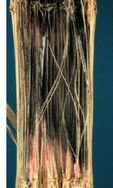
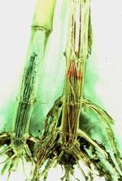

| Home |
| MAIZE |
mAJOR DISEASES |
| 1. Downy Mildew |
| 2. Sorghum downy mildew |
| 3. Phlippine downy mildew |
| 4. Crazy top |
| 5. Leaf blight |
| 6. Rust |
| 7. Head smut |
| 8. Charcoal rot |
mAJOR DISEASES |
| 1. Bacterial Stalk rot |
| 2. Mosaic |
| 3. Brown spot |
| Questions |
| Download Notes |
MAIZE :: MAJOR DISEASES :: CHARCOAL ROT
Charcoal rot - Macrophomina phaseolina(Rhizoctonia bataticola)
Symptoms
The affected plants exhibit wilting symptoms. The stalk of the infected plants can be recognized by grayish streak. The pith becomes shredded and grayish black minute sclerotia develop on the vascular bundles. Shredding of the interior of the stalk often causes stalks to break in the region of the crown. The crown region of the infected plant becomes dark in colour. Shredding of root bark and disintegration of root system are the common features.
|  |  |
Symptoms |
|
Pathogen
The fungus produces large number of sclerotia which are round and black in colour. Sometimes, it produces pycnidia on the stems or stalks.
Favourable Conditions
- High temperature and low soil moisture (drought)
Disease cycle
The fungus has a wide host range, attacking sorghum, pearlmillet, fingermillet and pulses. It survives for more than 16 years in the infected plant debris. The primary source of infection is through soil-borne sclerotia. The pathogen also attacks many other hosts, which helps in its perpetuation. Since the fungus is a facultative parasite it is capable of living saprophytically on dead organic tissues, particularly many of its natural hosts producing sclerotial bodies. The fungus over winters as a sclerotia in the soil and infects the host at susceptible crop stage through roots and proceeds towards stem.
Management
- Long crop rotation with crops that are not natural host of the fungus.
- Irrigate the crops at the time of earhead emergence to maturity.
- Treat the seeds with Carbendazim or Captan at 2 g/kg.
- Grow disease tolerant varieties viz., SN-65, SWS-8029, Diva and Zenit.